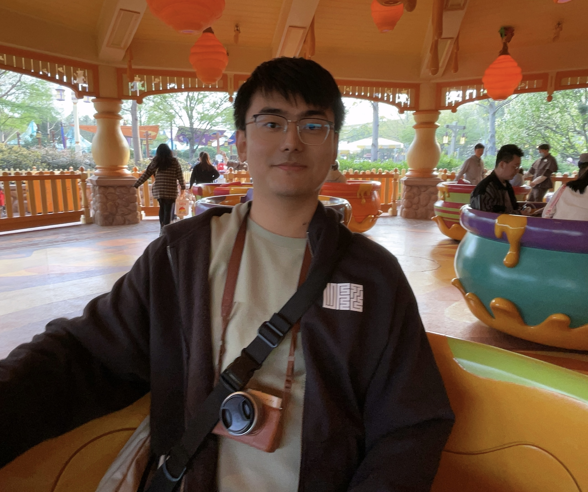
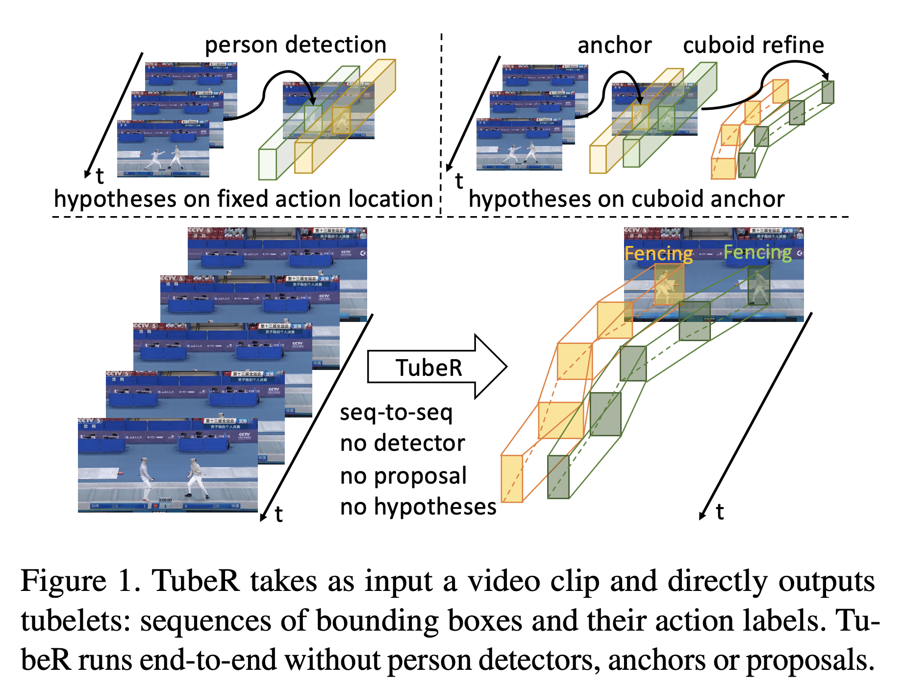
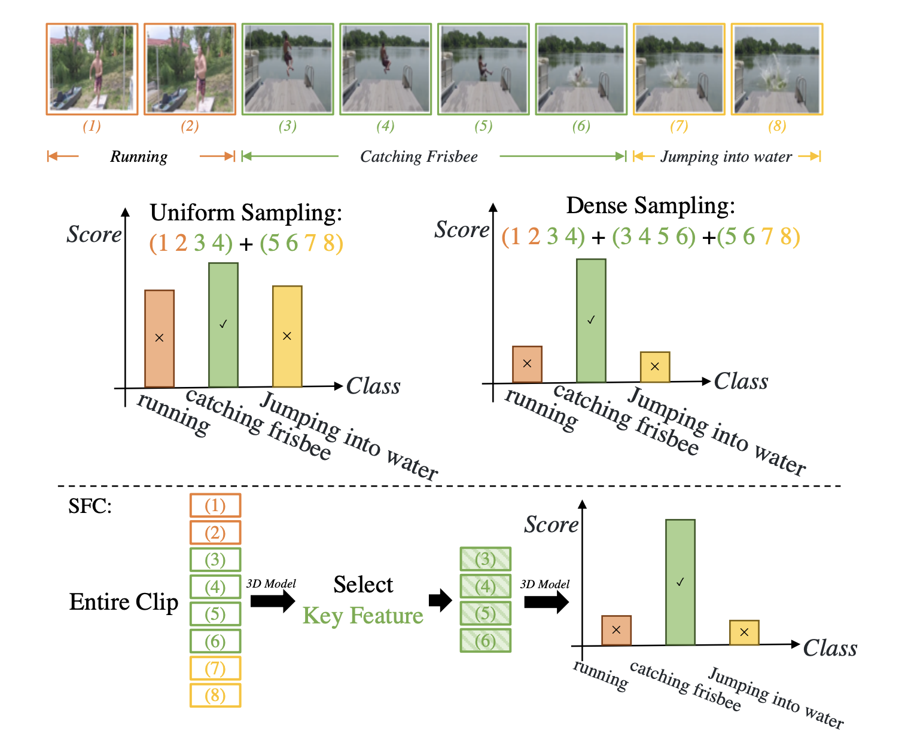
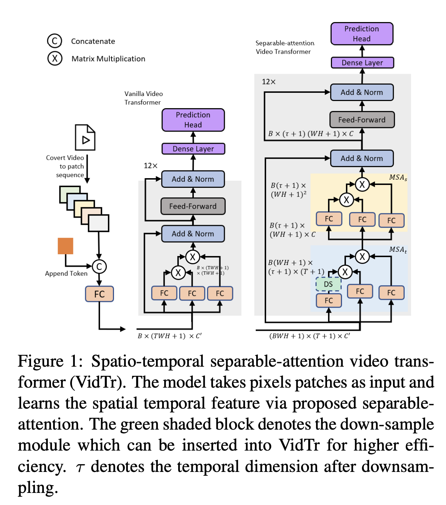
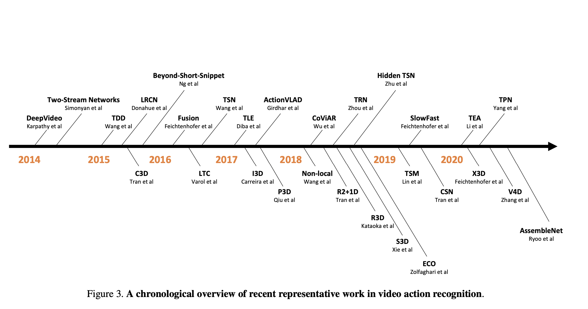

|
Chunhui Liu I'm a Senior Machine Learning Engineer at TikTok's Video Search Team, where I serve as the tech lead for relevance and pretraining. I work with a group of talented individuals to build the world's largest short video search engine with tens of billions videos, and serving billions of users daily. My team focuses on developing BERT/LLM models as part of the search engine to ensure that the results are safe and relevant, utilizing advanced techniques in CV/NLP/Multimodal learning and pretraining. I was previously an Applied Scientist at Amazon AI, where I conducted cutting-edge research and developed real-world applications for video and action understanding from cameras. I obtained my Master's degree in Computer Vision from CMU and my Bachelor's degree in Computer Science, Summa Cum Laude, from Peking University, under the supervision of Prof. Jiaying Liu. |
 |
{kind=link}
|
We are hiring! |
Research and Selected PublicationsRecently, I have not been an active researcher on public topics. However, I remain deeply interested in deep learning, computer vision, multi-modality learning, and video understanding. I am passionate about building machine learning models that understand the physical world in a way similar to humans. |
|

|
Tuber: Tubelet transformer for video action detection
Jiaojiao Zhao, Yanyi Zhang, Xinyu Li, Hao Chen, Bing Shuai, Mingze Xu, Chunhui Liu, Kaustav Kundu, Yuanjun Xiong, Davide Modolo, Ivan Marsic, Cees GM Snoek, Joseph Tighe CVPR, 2022 Code / Paper The first SOTA transformer model on Action Detections, using learnable queries as tubelet proposals. |
|

|
Selective Feature Compression for Efficient Activity Recognition Inference
Chunhui Liu, Xinyu Li, Hao Chen, Davide Modolo, Joseph Tighe ICCV, 2021 Paper Utilizing transformers as spatial feature sampler, achieve 6x faster inference without performance drop. |
|

|
Vidtr: Video transformer without convolutions
Yanyi Zhang, Xinyu Li, Chunhui Liu, Bing Shuai, Yi Zhu, Biagio Brattoli, Hao Chen, Ivan Marsic, Joseph Tighe ICCV, 2021 Code / Paper One of the earliest works to use the transformer architecture for action recognition |
|

|
A comprehensive study of deep video action recognition
Yi Zhu, Xinyu Li, Chunhui Liu, Mohammadreza Zolfaghari, Yuanjun Xiong, Chongruo Wu, Zhi Zhang, Joseph Tighe, R Manmatha, Mu Li Arxiv, 2021 Code / Paper / Tutorial We present a survey paper that summarizes 16 datasets and 200 existing papers on action understanding. Additionally, we provide tutorial workshops and a complete codebase to help newcomers join this field. |

|
PKU-MMD: A Large Scale Benchmark for Continuous Multi-Modal Human Action Understanding
Chunhui Liu, Yueyu Hu, Yanghao Li, Sijie Song, Jiaying Liu ACM MM Workshop, 2017 Code / Paper / Project Page / Dataset We present a survey paper that summarizes 16 datasets and 200 existing papers on action understanding. Additionally, we provide tutorial workshops and a complete codebase to help newcomers join this field. |
|
This template is forked from source code. |